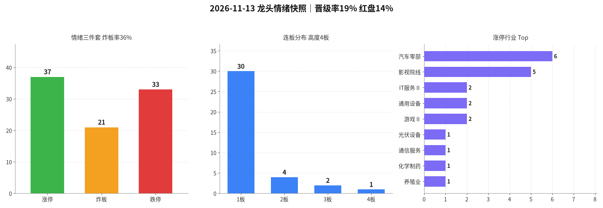

交易日 2026-11-13（周五） · 目标交易日 2026-11-16（周一） · 退潮加深·跌停扩散
情绪：退潮 涨停 37 · 跌停 33 炸板率 36.2% · 晋级率 18.9% · 高度 4板| 票 | 昨动作 | 今收盘涨跌幅 | 判定 |
|---|---|---|---|
| 全市场 | 空仓观望 | 涨停仍37、跌停5→33，创业板−3.32% | 对 |
| 算力中军 | 不加 | 景旺−10.00%跌停；沪电−10.00%（贴跌停、未入东财池）；东山−9.95%、深南−9.99%、源杰−11.76%；剑桥−4.93%、光迅−8.48% | 对 |
| 高度杂毛 | 不加 | 大东方−10.03%跌停（竞价−9.47%）、惠发−9.97%跌停；日出+5.54%（竞价−3.04%断板反抽）；天普+10.00%续4板但额仅1.79亿、炸2 | 对（纪律） |
| 脏2板 | 不加 | 中重跌停、天安竞价+10.03%一字开后收−5.93%、日上−9.18%；北纬竞价+7.05%封3板 | 对（纪律） |
| 昨跌停 | 不抄底 | 煌上煌再跌停、福莱−7.63%、上海电影−2.25% | 对 |
一句话：默认空仓和所有「不加/不抄」都对——跌停从5扩到33，算力中军和高度杂毛多数被砸；天普/北纬续板量能或出身不够，不是反例。改进（未回测）：退潮日盘中即便出现影视/游戏首板簇，只要跌停仍在扩散，次日默认不升级为试错。
涨停仍 37（与周四持平，未修复），跌停东财池 33（周四5↑急剧扩散，已超过11/6的15家），晋级率 18.9%（7/37，较13.1%略回升但7家晋级质量差），炸板率 36.2%（周四48.6%↓回落但仍偏高），红盘约 13.6%（东财涨跌分布：上涨734 / 下跌4594 / 平盘50；乐咕今日未更新）。指数继续收弱（上证 −0.59%、创业板 −3.32%、中证1000 −2.76%），两市缩量约2764亿至约16557亿。涨停池成交额再降到约225亿，跌停池约267亿已反超。连板高度从5板降到 4板（仅天普，额1.79亿、炸2）。定性仍是 退潮，而且是加深：不是冰点（仍有37家涨停、影视出现首板簇），但亏钱效应比周四更铺开。默认继续空仓，不追影视首板、不回流算力、不接力小额高度、不抄跌停。
今日为退潮，且跌停大幅扩散、算力主线资金继续撤出，触发情绪→路线2风险过滤。
| 指标 | 数值 | 备注 |
|---|---|---|
| 涨停家数 | 37 | 已剔 ST / 北交所；东财 raw37=clean37 |
| 跌停家数 | 33 | 东财跌停池 raw33=clean33（无ST/北交所）；较周四5急剧扩散。含景旺电子、大东方、惠发食品、中重科技、襄阳轴承、煌上煌（2连跌）等 |
| 炸板家数 | 21 | 炸板池 clean21（raw21=clean21） |
| 炸板率 | 36.2% | 炸板/(涨停+炸板)=21/58；较周四48.6%回落，仍偏高 |
| 连板高度 | 4板 | 仅天普股份（汽车零部，炸2，额仅1.79亿）——不当空间龙 |
| 连板结构 | 4板 1 / 3板 2 / 2板 4 / 1板 30 | 3板：北纬科技（通信，早封干净）、金辰股份（光伏，炸1）；2板里广百炸5、好当家炸5、国统炸16尾盘才封 |
| 昨日涨停数 | 37 | previous 池 raw37=clean37，与周四涨停池一致 |
| 晋级数 / 晋级率 | 7 / 18.9% | 口径同前：previous∩今日涨停池；较13.1%略升，但晋级票多数脏或量小 |
| 高度/主线样本 | 算力中军零晋级且出现跌停级（景旺跌停，沪电贴跌停）；晋级7家不是算力中军 | |
| 两市成交额 | 约 16557亿（新浪：上证≈7706.14 + 深成≈8850.54；周四约19321↓，缩量约2764） | |
| 涨停池成交额 | 约 225亿（仅涨停标的，周四约291↓；跌停池约267亿已反超） | |
| 红盘占比 | 约 13.6%（东财涨停专题涨跌分布：上涨734 / 下跌4594 / 平盘50。乐咕接口仍停在11/12 15:00，今日未更新，已改用东财分布） | |
读表一句话：涨停没修复、跌停扩到33、红盘再降、高度回落到小额4板 = 退潮加深。影视首板簇和个别续板不改变这个判断。

附图：涨停 / 炸板 / 跌停柱状 + 连板分布 + 行业集中（emotion_20261113.png）
4板：天普股份（汽车零部，竞价+4.78%、炸2，额仅1.79亿）——量能不够当中军，不加。
3板：北纬科技（通信服务，竞价+7.05%、早封干净，额4.16亿）——昨是炸6的脏2板，今日孤立续板，不加当空间龙；金辰股份（光伏，炸1，额6.94亿）——同题材永臻股份跌停，形不成光伏主线，不加。
脏2板：广百炸5、好当家炸5、国统炸16尾盘才封，不加。汽车零部虽有6家涨停，但襄阳轴承、长源东谷、海安集团同步跌停，结构分裂，不加。
华胜天成（IT服务）额约25.1亿，炸3、午后才回封；日发精机额约15.0亿、炸7；通化金马炸6、天邦食品炸5。放量脏回封不是中军，不加。昨观察过的散首板验证失败：龙建股份今日炸2收 −0.71%。
主线判断依据 = 涨停池成交额集中度 + 封板质量 + 晋级质量；退潮日的影视首板簇、小额高度续板，都不能当成新主线。
情绪 = 退潮（加深） → 专项总仓建议 0%（默认空仓，未回测）；同时持仓建议 0 只；不追影视/游戏首板簇、不回流已跌停级的算力中军、不接力天普4板/北纬3板、不抄跌停。
| 动作 | 空仓观望（默认） |
|---|---|
| 进场 | 无。周一竞价若昨涨停大量低开＞5%，或跌停仍在双位数、指数快速跳水 → 全天不交易 |
| 仓位 | 0% |
| 原因 | 跌停从5扩到33、红盘约13.6%、算力中军跌停级、高度回落到小额4板；退潮加深日优先保命 |
| 作废 | 仅当盘中同时出现「跌停收窄到个位数、炸板率继续回落、新板块≥8家早盘干净首板」才允许把指令2升级为极轻观察（否则维持空仓） |
| 标的 | 文投控股 / 凯撒文化 / 横店影视 / 金逸影视 / 中国电影 / 儒意电影 / 幸福蓝海 |
|---|---|
| 动作 | 只观察 / 默认不加 |
| 进场 | 无开仓。即使竞价高开或回封，也不追板、不打前排。记录封板与跟风，供跌停收敛后再议 |
| 仓位 | 0% |
| 原因 | 退潮日出现的超跌回流首板簇，高度为0、部分炸板多次；上海电影未反包，不是新主升 |
| 标的 | 剑桥科技 / 东山精密 / 光迅科技 / 深南电路 / 景旺电子 / 长飞光纤 / 英维克 / 沪电股份 / 源杰科技 / 智微智能，以及中际旭创 / 新易盛 / 胜宏 / 生益科技 |
|---|---|
| 动作 | 不加（不抄跌停级中军，反抽也不补） |
| 仓位 | 0% |
| 原因 | 熄火后第二日出现跌停级杀伤，退潮期不二次试错同一主题 |
| 标的 | 天普股份 / 北纬科技 / 金辰股份 |
|---|---|
| 动作 | 不加 |
| 仓位 | 0% |
| 原因 | 天普4板额仅1.79亿且炸2；北纬是昨脏2板的孤立3板；金辰同题材已有跌停。退潮期不把小额或孤立高度当空间龙。若竞价打开后直线砸 → 强化全天空仓 |
| 标的 | 广百股份 / 好当家 / 国统股份 / 华胜天成 / 日发精机 / 通化金马，以及任何炸板≥4次回封票 |
|---|---|
| 动作 | 不加 |
| 仓位 | 0% |
| 原因 | 退潮加深日更要避开脏板；放量脏回封不是中军 |
| 标的 | 景旺电子 / 大东方 / 惠发食品 / 中重科技 / 襄阳轴承 / 煌上煌，以及今日其余跌停票；日出东方（5板已断）也不接反抽 |
|---|---|
| 动作 | 不加 / 不抄底 |
| 仓位 | 0% |
| 原因 | 跌停已扩到33家，抄跌停不是退潮策略；昨5板大东方直接砸死，更不能当超跌反弹 |
20261113；个股与两市成交额来自新浪。晋级口径与此前一致（previous∩当日涨停池，7/37）。红盘用东财涨停专题涨跌分布（上涨734/下跌4594/平盘50）；乐咕接口仍返回 2026-11-12 15:00，今日未更新，已注明缺口。沪电股份新浪收−10.00%贴跌停价，未进入东财跌停池，已区分。数字见 data/*_20261113* / metrics_20261113.json。未编造。